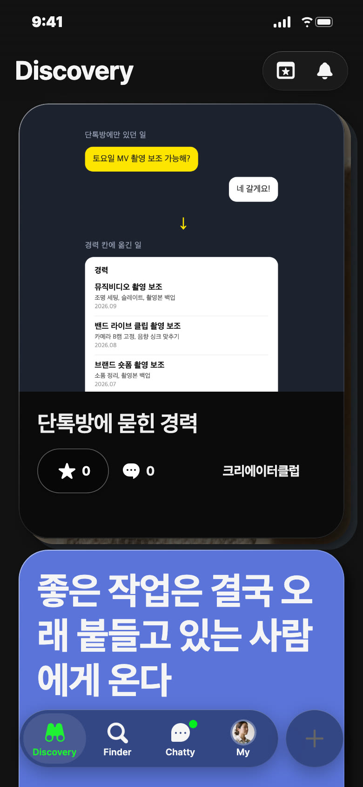
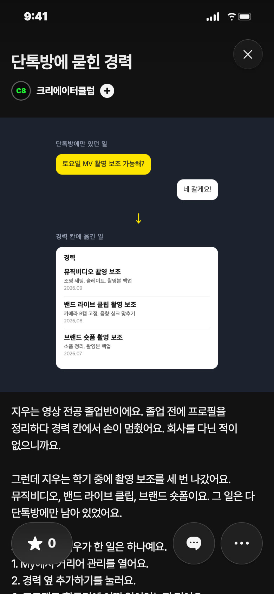
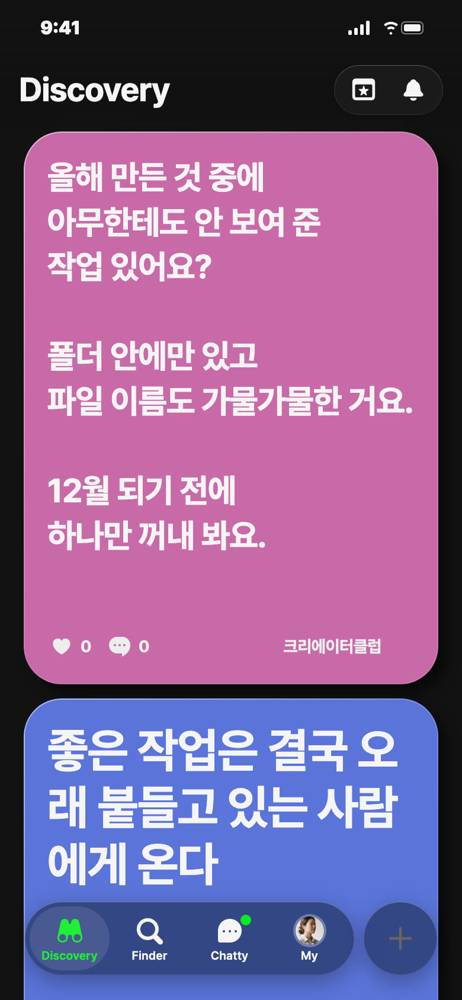
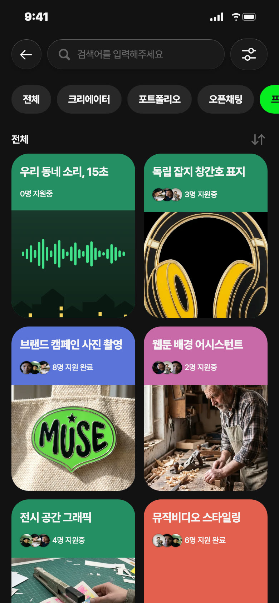
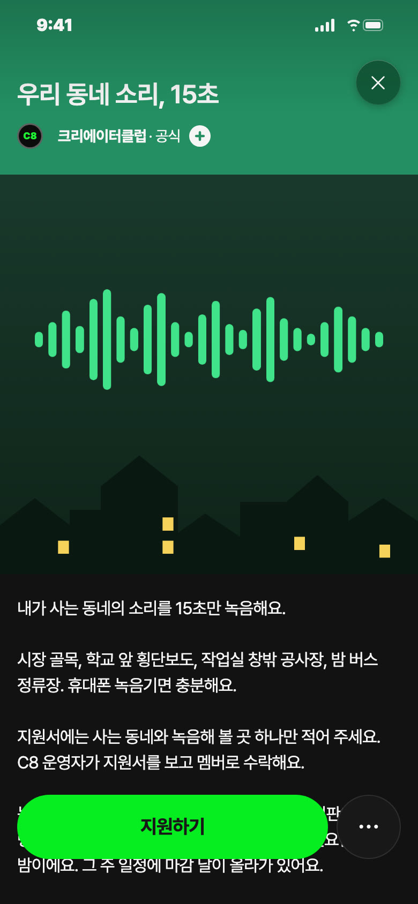

C8 앱 게시 시안 · 11/10(화) — 오늘 추천: 포트폴리오 · 낮 12시
오늘 추천 · 포트폴리오


칸: 앱 소개 × 쓸모 · 연재 2편
왜 오늘: 졸업 앞두고 프로필 정리하는 철, 화요일 설명서 자리
보낼 사람: 촬영·외주 다니는 동기에게 「너 그거 경력이야, 여기 넣어」
받고 싶은 댓글: 부탁 안 함
사진 2장: 1 커버(단톡방 → 경력 세 줄) · 2 경력 추가하기 화면을 지우 값으로 채운 모습
제목
단톡방에 묻힌 경력
설명
지우는 영상 전공 졸업반이에요. 졸업 전에 프로필을 정리하다 경력 칸에서 손이 멈췄어요. 회사를 다닌 적이 없으니까요. 그런데 지우는 학기 중에 촬영 보조를 세 번 나갔어요. 뮤직비디오, 밴드 라이브 클립, 브랜드 숏폼이요. 그 일은 다 단톡방에만 남아 있었어요. 그래서 오늘 지우가 한 일은 하나예요. 1. My에서 커리어 관리를 열어요. 2. 경력 옆 추가하기를 눌러요. 3. 프로젝트/활동명에 어떤 일이었는지 적어요. 50자까지예요. 4. 소개/담당 역할에 내가 맡은 일을 적어요. 150자까지예요. 5. 기간을 넣고 추가하기를 눌러요. 담당 역할에 「촬영 보조」만 쓰면 무슨 일을 했는지 안 보여요. 지우는 「조명 세팅, 슬레이트, 촬영본 백업을 맡았어요.」라고 적었어요. 다음 촬영 팀을 꾸리는 사람은 그 한 줄을 보고 연락해요. 지우 경력 칸에는 이제 세 줄이 있어요. 회사 이름은 하나도 없어요. 지우와 작업 이름은 C8이 지어낸 거예요. #지우따라하기 #커리어관리
비축 · 영감 · 금 11/13 낮 12시 후보 · 분홍

칸: 올리기 × 공감
왜 비축: 금요일 「쉬거나 비축안 하나」 자리 후보
보낼 사람: 작업은 많은데 포폴은 비어 있는 친구에게 「너 그 폴더 얘기다」
받고 싶은 댓글: 「2월에 그린 거 방금 올렸어요. 생각보다 괜찮네요」
영감 글
올해 만든 것 중에 아무한테도 안 보여 준 작업 있어요? 폴더 안에만 있고 파일 이름도 가물가물한 거요. 12월 되기 전에 하나만 꺼내 봐요.
비축 · 프로젝트 · 초록


칸: 함께 만들기 × 놀이
왜 비축: 수요일 프로젝트 자리 후보, 46 출시·운영자 확인 뒤
보낼 사람: 산책하며 소리 녹음하는 친구에게 「너 녹음한 거 여기 올려」
받고 싶은 지원: 「망원동 · 토요일 아침 시장 골목」
제목
우리 동네 소리, 15초
카테고리
함께 만들기
모집 내용
사는 동네와 녹음해 볼 곳 하나 · 11/16~11/29 · 상품 없음
설명
내가 사는 동네의 소리를 15초만 녹음해요. 시장 골목, 학교 앞 횡단보도, 작업실 창밖 공사장, 밤 버스 정류장. 휴대폰 녹음기면 충분해요. 지원서에는 사는 동네와 녹음해 볼 곳 하나만 적어 주세요. C8 운영자가 지원서를 보고 멤버로 수락해요. 녹음한 소리는 오디오 포트폴리오로 올리고, 게시판에 링크와 동네 이름을 남겨요. 마감은 11월 29일 일요일 밤이에요. 그 주 일정에 마감 날이 올라가 있어요. 다 모이면 서로 모르는 동네의 15초를 이어서 들을 수 있어요. 상품은 없어요. 남는 건 내 포폴 한 편과, 다른 동네 소리예요.